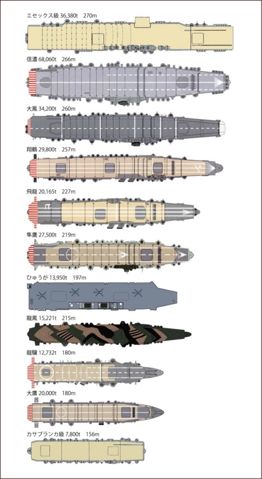
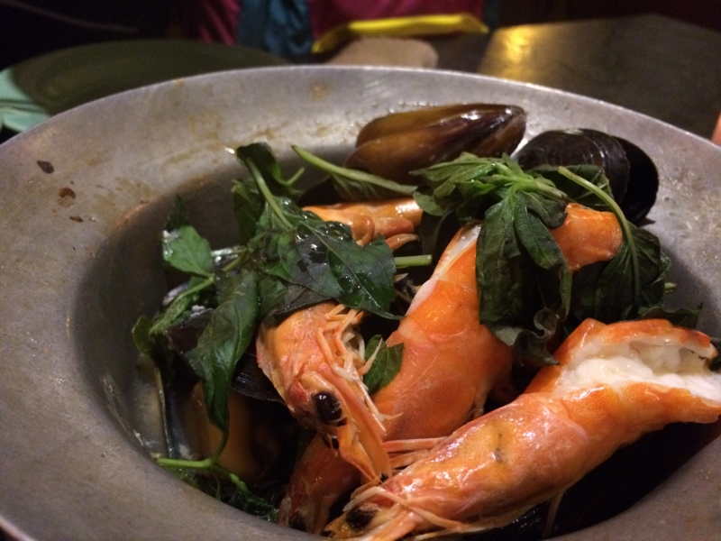

横須賀のヴェルニー公園にも寄ってきた（軍艦長門碑・軍艦山城之碑）
公開日：
戦艦・比叡のお墓に参ろうと衣笠へ向かう途中の話。
買ったばっかりの iPhone 5S（iPhone 5S 買ったった。 - だるろぐ）の指紋登録なんかをチマチマやっていたら、Y 氏がやたら興奮してる。顔を上げると、横須賀線の車窓には鼠色の大きな船がビッシリ並んでいた。これは確かに壮観だな。横須賀には何回か行ったことがあったはずだけど、実は港は見たことがなかった。
すっかり盛り上がってしまったので、衣笠へ参った後に横須賀で降りてご飯を食べることに決めた。
ヴェルニー公園
横須賀駅に降り立つと、すでに日は暮れていた。割りと雰囲気のよいところで、Y 氏などではなく、かわいい女の子を連れてデートしたかった（募集中

左手の奥にやたら大きな船がある。目が悪くて暗いところは苦手なのだけど、艦首に「181」と書いてあるようだ。その場でググったら ひゅうが (護衛艦) - Wikipedia が引っかかったので、あれが強襲揚陸艦「ひゅうが」（JS Hyūga, DDH-181）ということになるのだろう。最近お披露目された「いずも」はもっとデカいんだよなぁ……どんだけなんだ。

この「ひゅうが」、第二次大戦で言えば軽空母並みの大きさなんだね（龍驤ちゃんかわいい！）。
潜水艦もいたみたい。左側の船はなんだろう？ 船首に 82 って書いてあるっぽいし、米軍所属の ラッセン (ミサイル駆逐艦) - Wikipedia なのかもしれない。艦影は確かに割りとそれっぽいけど（日本にいるっぽいし）、自分は詳しくないから見分けがつかない。
軍艦碑
このヴェルニー公園の隅には、軍艦長門碑と軍艦山城之碑がある。
こっちが“航行する違法建築”“ドックにいる方が長い戦艦”こと不幸扶桑型戦艦姉妹の妹のほう、山城さん。
こっちが“ビッグ7”をつとめた当時の最強戦艦・長門さん。
どっちも逸話満載なのだけど、それは今度訪ねたときにしましょう。暗くて碑文も読めないわ。
アジア料理？

さいごに近所のアジア料理店で晩御飯を食べました。うまうま。